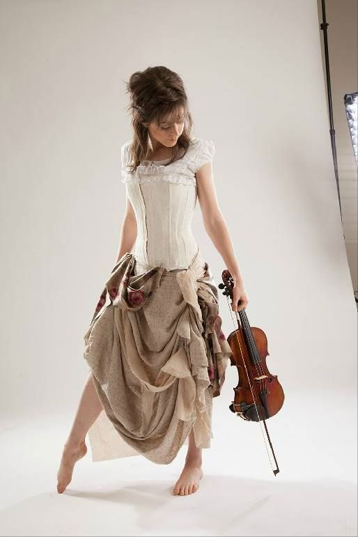

Lindsay Sterling is a skinny gingered-hair white girl, who can dance and play the violin at the same time. Her ballet moves and original scored music inspires me. It motivates me to keep pumping iron at the gym and running faster across the finish line.
In 2013, my boyfriend dared me to run my first 5K race. I was not physically active and had no desire to work on a healthy life style. My body would give-up on the treadmill in less than 5 minutes. But, I always love a good challenge.
Like with anyone who tries their very best, I believe the first step is to build the ultimate music playlist. I came across a Youtube video called Crystallized. Sterling played the violin inside and around an giant icy castle. The blues and whites of the location were stunning and fantasy-like. She twirled like a copper penny and bob her head as if she was at a hip-hop concert.
What was unique about her music is that she blended dubstep and classical strings. When I first listened to her music, I felt like I was being transported into another world. It was odd at first, but it captivated me. I felt powerful and creative. Ten 5K races and two half-marathons later, she is still on the top of my music playlist.
She has over 1 billion views on her videos and over 8 million subscribers on her Youtube channel. She sells out over 500,000 seats at each venue and tours in more than 25 countries. Lindsay has always been a special snowflake in the music industry, but entertainers saw her a backup musician at first.
She became a quater-finalist on America's Got Talent in 2010, but her recent performances failed to meet this judges expectations. Judge Piers Morgan said, "You're not untalented, but you're not good enough, I don't think, to get away with flying through the air and trying to play the violin at the same time."
Other judges agreed that her performances are better suited not in a solo career and that she would not sell out in big venues like Vegas. She was was voted off with failure riding on her shoulders, but she kept on pursue her craft. She collaborated with other performers on Youtube, which elevated her in mainstream music.
Lindsay didn't give up on her music and refused to listened to nay sayers. Just like I, I refused to give-up on a 5K and I continue to climb and race towards a new goal in completing a marathon. Lindsay will be my motivation and inspiration in my ear telling me to never give up.